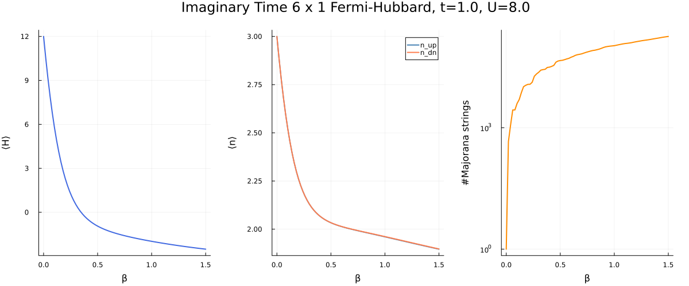

using Revise
using MajoranaPropagation
using PauliPropagation
using Plots
using MeasuresSimulate the dynamics of the spinful Hubbard model on a 2D lattice of $N_x \times N_y$ spinful sites. The Hamiltonian is
\[\hat{H}=-t \sum_{\langle i,j\rangle, \sigma=\{\uparrow, \downarrow\}}\left(\hat{c}_{i, \sigma}^{\dagger} \hat{c}_{j, \sigma}+\hat{c}_{j, \sigma}^{\dagger} \hat{c}_{i, \sigma}\right)+U \sum_i \hat{n}_{i \uparrow} \hat{n}_{i \downarrow}\]
N_x = 6
N_y = 1
N_spinful_sites = N_x * N_y
t = 1.0
U = 8.08.0Get 2D connectivity, and create the circtuit for implementing a single layer of first order Trotterization.
topo = rectangletopology(N_x, N_y)
imag_circ = []
imag_thetas = []
H = MajoranaSum(Float64, N_spinful_sites, true)
n_up = MajoranaSum(Float64, N_spinful_sites, true)
n_dn = MajoranaSum(Float64, N_spinful_sites, true)
dbeta = 0.02
#up hoppings
for (i, j) in topo
push!(imag_circ, ImaginaryFermionicRotation(:hopup, [i, j]))
push!(imag_thetas, -t * dbeta)
add!(H, :hopup, [i, j], -t)
end
#down hoppings
for (i, j) in topo
push!(imag_circ, ImaginaryFermionicRotation(:hopdn, [i, j]))
push!(imag_thetas, -t * dbeta)
add!(H, :hopdn, [i, j], -t)
end
#on-site repulsion
for i = 1:N_spinful_sites
push!(imag_circ, ImaginaryFermionicRotation(:nupndn, [i]))
push!(imag_thetas, U * dbeta)
add!(H, :nupndn, i, U)
add!(n_up, :nup, i, 1.)
add!(n_dn, :ndn, i, 1.)
endBackpropagate $n_{2,\uparrow}$, the up density on site 2
target_beta = 1.5
n_layers = Int(round(target_beta / dbeta))
min_abs_coeff = 1.e-4
identity_string = 0
obs = MajoranaSum(Float64, N_spinful_sites, true)
add!(obs, identity_string, 1.)
obs = VectorMajoranaSum(obs)
@show obs
res = zeros(n_layers+1)
n_up_res = zeros(n_layers+1)
n_dn_res = zeros(n_layers+1)
res[1] = MajoranaPropagation.scalarproduct(H, obs)
n_up_res[1] = MajoranaPropagation.scalarproduct(n_up, obs)
n_dn_res[1] = MajoranaPropagation.scalarproduct(n_dn, obs)
length_res = zeros(Int, n_layers+1)
length_res[1] = length(obs)
for l in 1:n_layers
propagate!(imag_circ, obs, imag_thetas; min_abs_coeff, heisenberg=false, truncate_each_mr=true, normalize_coeffs=true)
res[l+1] = MajoranaPropagation.scalarproduct(H, obs)
n_up_res[l+1] = MajoranaPropagation.scalarproduct(n_up, obs)
n_dn_res[l+1] = MajoranaPropagation.scalarproduct(n_dn, obs)
length_res[l+1] = length(obs)
end
obsobs = VectorMajoranaSum with 1 term:
1.0 * 000000000000000000000000
VectorMajoranaSum with 179131 terms:
1.0 * 000000000000000000000000
-0.3594583425348861 * 110000000000000000000000
-0.35779596703226885 * 001100000000000000000000
0.27106290038690034 * 111100000000000000000000
-0.28567337134234855 * 010010000000000000000000
-0.2346682095951517 * 011110000000000000000000
0.28565743086818385 * 100001000000000000000000
0.2347909235978127 * 101101000000000000000000
-0.37567991290227254 * 000011000000000000000000
-0.0231277665787717 * 110011000000000000000000
-0.13125486714626866 * 001111000000000000000000
-0.21001989229199464 * 111111000000000000000000
-0.286039373963259 * 000100100000000000000000
-0.23515927737724354 * 110100100000000000000000
0.024503844627834524 * 101010100000000000000000
0.03774085983600315 * 010110100000000000000000
0.02392196698059192 * 011001100000000000000000
-0.03658998149933571 * 100101100000000000000000
-0.22498014766695926 * 000111100000000000000000
0.17533902208204802 * 110111100000000000000000
...p_res = plot(dbeta*(0:n_layers)./ t, res, label="", xlabel="β", ylabel="⟨H⟩", lw=2, color=:royalblue)
p_densities = plot(dbeta*(0:n_layers)./ t, [n_up_res n_dn_res], label=["n_up" "n_dn"], xlabel="β", ylabel="⟨n⟩", lw=2, color=[:steelblue :coral])
p_length = plot(dbeta*(0:n_layers)./ t, length_res, label="", xlabel="β", ylabel="#Majorana strings", yscale=:log10, lw=2, color=:darkorange)
plot(p_res, p_densities, p_length, layout=(1,3), size=(1200,500), margin=5mm, suptitle="Imaginary Time $N_x x $N_y Fermi-Hubbard, t=$t, U=$U")